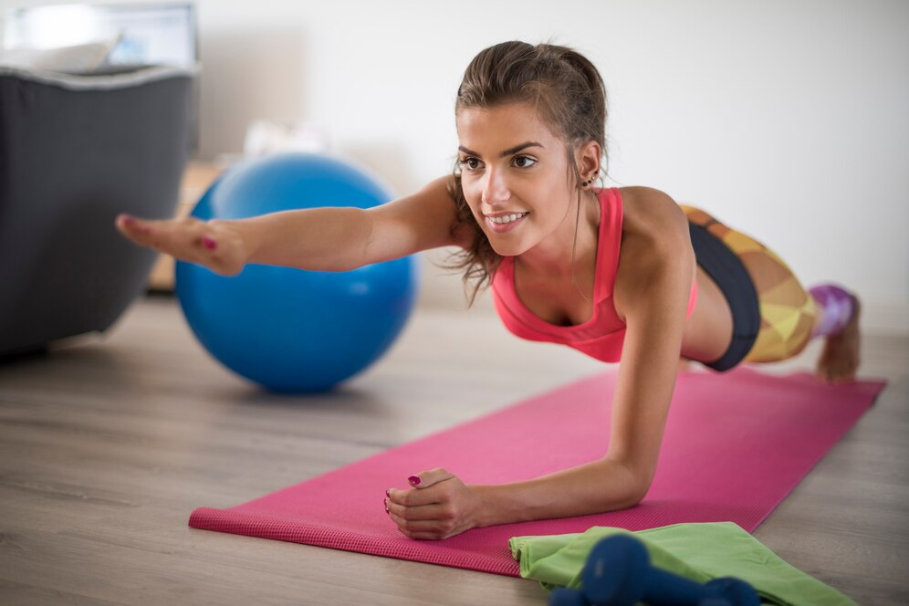

Realizar una rutina de entrenamiento en casa es la mejor forma de comenzar a hacer ejercicio físico. Si has llevado una vida sedentaria una rutina full body suave te ayudará a trabajar todo el cuerpo de forma equilibrada. O combinar en diferentes días un entrenamiento en casa para cada zona específica del cuerpo. Al principio esta rutina será más corta y con menos repeticiones. Y a medida que ganes en forma física podrás ir ampliándola. En intensidad y en tiempo. Descubre la rutina de ejercicios en casa que te ayudará a ganar forma y empezar a sentirte bien con tu cuerpo mejorando además tu salud.
Consideraciones previas para una rutina de ejercicios en casa para principiantes
- No sigas una rutina de ejercicios en casa para principiantes que trabaje la misma parte del cuerpo dos días seguidos. El descanso es clave para la recuperación muscular y la mayor efectividad del entrenamiento.
- Controla tus pulsaciones. Especialmente si partes del sedentarismo.
- La rutina de ejercicios en casa debe costarte esfuerzo. Pero comienza por hacer el programa corto y ve aumentando de intensidad semana a semana. Pasadas las primeras semanas dobla las series de cada ejercicio. Y semanas después puedes hacer tres series de cada.
- Recuerda que calentar antes de hacer una rutina en casa es esencial para evitar lesiones.
- Hidrata adecuadamente tu organismo. Además de perder líquido perderás sales minerales y electrolitos. Así que toma la cantidad adecuada para contrarrestar su pérdida. Durante y tras el entrenamiento.
- Para unos segundos entre series de ejercicios o al cambiar de un ejercicio a otro. No es perjudicial, al contrario.
Rutina de ejercicios en casa para principiantes de una semana
Lunes o día primero, tren inferior
Comienza calentando. Para ello haz un minuto de carrera suave en el sitio seguido de 40 segundos de descanso y un 5 saltos de rodilla. Descansa 15 segundos. Y haz otro minuto de carrera suave en el sitio. Es el momento de comenzar la rutina de ejercicios en casa. Comienza saltando a la comba 1 minuto. Descansa otro minuto y salta un minuto más. Tras otro minuto de descanso llega el momento de hacer un minuto de carrera intensa en el sitio, si te encuentras en casa, lo ideal sería contar con una cinta de correr. Descansa de nuevo un minuto, repite otro minuto de carrera y descansa un minuto más. Haz una serie de 10 sentadillas. Y 3 minutos de pedaleo en el aire, tumbado. Si tienes bicicleta estática o de spinning en casa puedes utilizarla en lugar de pedalear en el aire.
Martes o día segundo, tren superior
Antes de la rutina de ejercicios en casa, haz el calentamiento. Para ello haz un minuto de carrera suave en el sitio, otro de jumping jacks y 5 sentadillas explosivas. Entre los distintos tipos de ejercicios descansa 20 segundos. Comienza tu rutina en casa para trabajar en tren superior. Haz 15 flexiones de brazos. Descansa un minuto. Con unas mancuernas, realiza una serie de curls de mancuernas de 15 alzadas con cada brazo. Descansa otro minuto. Haz 10 crunch. Descansa un minuto. Y haz 10 dominadas.
Miércoles o día tercero, tren inferior
Haz el mismo calentamiento que para la rutina de entrenamiento en casa del lunes. De nuevo el tercer día toca trabajar el tren inferior. Realiza sentadillas y descansa un minuto. Seguidamente haz 15 burpees y descansa otro minuto. Haz un minuto de sentadillas isométricas y descansa el mismo tiempo. Ejecuta 15 mountain climbers. Corre 40 segundos a gran intensidad en el sitio y descansa el mismo tiempo. Y termina la rutina con una serie de 15 crunchs.
Jueves o día cuarto, tren superior
Cuando hablamos o hacemos referencia a la importancia de la alimentación saludable debemos entender este concepto como algo ligado a nuestro día a día. LLevar unos hábitos de vida saludables acompañados de una alimentación correcta nos ayudarán a un pleno funcionamiento de las facultades de nuestro organismo. Los problemas de consumir alimentos con muchas grasas o aceites pueden conllevar enfermedades cardiovasculares. Lo correcto es hacer lo propio y evitar las grasas trans, los fritos y la comida basura. Llevar a cabo una dieta saludable es muy sencillo, recordar que lo que es perjudicial es la cantidad, no la comida en sí. Por ello, consumir alimentos que pertenecen a los grupos de alimentos de manera variada es clave. Echando un vistazo a esta tabla puedes ver y deducir qué alimentos son los más saludables a la hora de preparar
Viernes o día quinto, descanso con recuperación activa
Después de la rutina en casa del día anterior, llega la jornada de descanso. Este día no hagas ninguna rutina de ejercicio en casa. Pero sí una recuperación activa. Esta es una rutina muy suave, similar a un calentamiento largo. Para ello realiza 2 minutos de carrera suave en el sitio, para un minuto y sigue con carrera suave en el sitio dos minutos más. Haz un minuto de rodillas al pecho. Descansa un minuto y repite de nuevo descansando otro minuto. Y haz 8 flexiones con pies elevados.
Deja el sedentarismo y comienza a ganar forma física con esta rutina de ejercicios en casa para principiantes de una semana. En pocas semanas comenzarás a notar los resultados y podrás incrementar esta en intensidad y tiempo para ir alcanzando los objetivos que te has marcado. Y si realmente estás interesado en hacer la rutina y mejorar tu rendimiento en casa, aconsejamos equipar tu lugar de entrenamiento con máquinas fitness para uso doméstico.